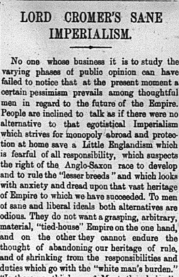

British Imperialism
 Painting by Hugh Williams
Painting by Hugh Williams
British imperialism is an extremely crucial topic in understanding the development of world history, particularly during the period spanning the 19th and early 20th centuries. This era is often characterized by historians as Pax Britannica, Latin for “British Peace.” It is so called due to the fact that Britain’s worldwide domination in the areas of economics, shipping, and military might kept most of Europe and the world in a state of relative peace. However, as the twentieth century came into view, global forces such as liberal ideals and nationalism threatened Britain’s role as the premier world superpower. Questions of how to proceed with its imperial rule began to multiply both in Britain and in its many colonies and territories abroad.

On the third page of the May 3rd, 1905 edition of the Egyptian Gazette contains an editorial article “Lord Cromer’s Sane Imperialism” that discusses a moderate “third way” of imperialism that rejects harsh materialistic concepts and embraces more liberal ideas of self-determination and government, when appropriate of course. This article maintains that Lord Cromer’s Annual Report on Egypt and the Sudan contain the necessary elements of pursuing a moderate approach for continuing the might of the Empire moving forward. This editorial provides a fascinating look at the prevailing dialogue of the day in one of Britain’s most crucial imperial territories about the morality and governance of British imperialism at the dawn of the 20th century.

Will Hanley
Associate Professor of History
I study the legal history of the Middle East and teach at Florida State University.